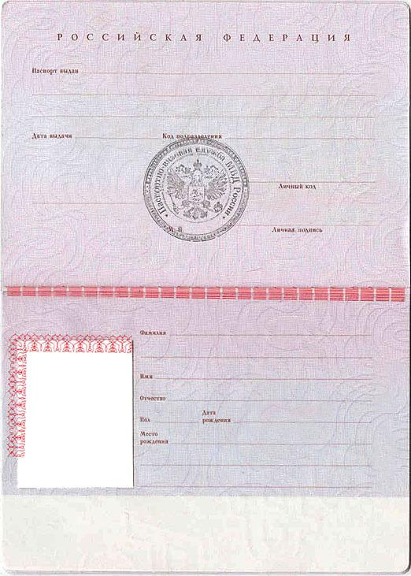

06 / DOM и JavaScript
Изменяем кириллицу на латиницу по клику
Кнопки заменяют innerText полей поверх изображения паспорта. Фамилия, имя, отчество, пол и место рождения переходят в латинскую запись, а год рождения 2007 — в MMVII.

УФМС по городу СПб и ЛО
23.02.2022
965-085
Макарьев
Виталий
Юрьевич
мужской
17.04.2007
Санкт-Петербург
02 / DOM И JAVASCRIPT
От события к результату
Один щелчок меняет поля паспорта; второй возвращает исходные данные.
- Вызываем функцию.Атрибут onclick связывает кнопку с toLatin() или toCyrillic().
- Меняем innerText.Фамилия, имя, отчество, пол и место рождения получают латинскую запись.
- Записываем год римскими цифрами.2007 превращается в MMVII. Кнопка возврата восстанавливает все исходные значения.
Пример обработки
function toLatin() {
document.getElementById('surname').innerText = 'Makarev';
document.getElementById('firstname').innerText = 'Vitaliy';
document.getElementById('patronymic').innerText = 'Yurevich';
document.getElementById('gender').innerText = 'male';
document.getElementById('birthplace').innerText = 'Sankt-Peterburg';
document.getElementById('year').innerText = 'MMVII';
}Данные остаются HTML-элементами. Фон паспорта задаётся отдельным изображением.